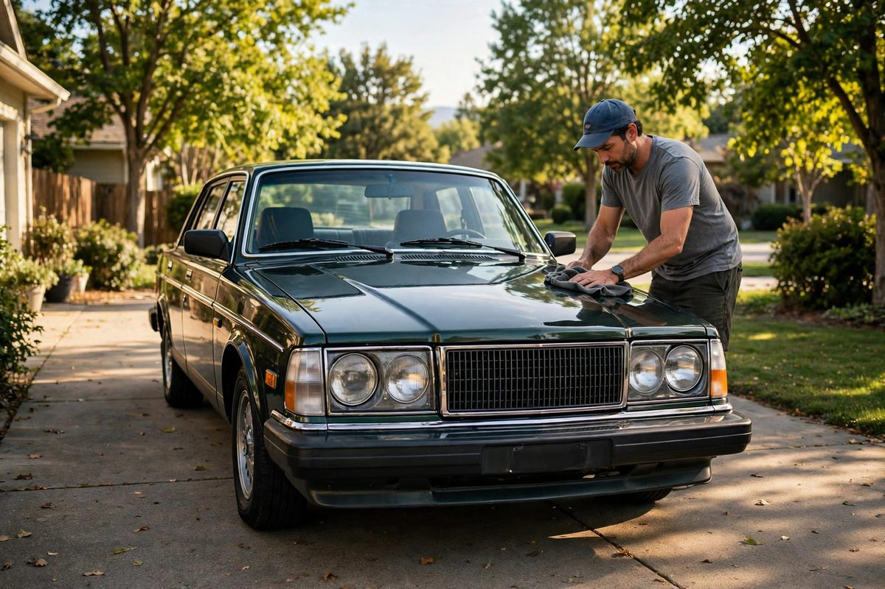

Home › Blog › How to Calculate Car Depreciation
How to Calculate Car Depreciation
Depreciation is the biggest cost of owning a car — bigger than fuel, insurance or repairs — yet most drivers never work it out. The moment a new car leaves the dealership, it starts losing value, and after five years the average car is worth less than half of what it cost.
The good news is that calculating depreciation is simple. You need only the price you paid, the car's value today, and one easy formula. This guide shows you how to calculate car depreciation step by step, with a worked example, the average year-by-year curve, and what makes your car lose value faster — or slower — than average.
What Is Car Depreciation?
Car depreciation is the loss in a car's value over time. It happens because of everyday wear and tear, age, mileage and changing demand: a three-year-old car is simply worth less than the same car brand new, even if it still runs perfectly.
Depreciation is not a bill you pay each month — you only feel it when you sell or trade the car in. But it is real money. If you buy a car for $35,000 and sell it three years later for $21,350, you have lost $13,650 in three years.
It is also the largest single cost of owning a new car. Fuel, insurance and repairs all add up, but none of them usually comes close to the value a new car loses in its first few years. That is why knowing how to calculate depreciation matters — it tells you what a car really costs you, not just what the monthly payment is.
The Car Depreciation Formula
There are two simple formulas, depending on what you want to know. The first tells you how much value your car has lost in dollars. The second turns that into a percentage, which is the useful number for comparing cars.
Value lost = price you paid − current value
Depreciation % = (value lost ÷ price you paid) × 100
For example, if you paid $30,000 for a car and it is now worth $21,000, it has lost $9,000. That is $9,000 ÷ $30,000 × 100 = 30% depreciation.
To predict what a car will be worth in the future, use the average depreciation rate for each year. The formula works year by year: take the value at the start of the year, subtract the percentage lost that year, and the result is the value at the end of the year.
Value after one year = starting value × (1 − depreciation rate)
So a $35,000 car that loses 16% in its first year is worth $35,000 × 0.84 = $29,400 after year one. Repeat the same step for each following year, using that year's rate. The rates below come from Kelley Blue Book's average depreciation curve, and the worked example in the next section uses them.
How to Calculate Car Depreciation in 3 Steps
Whether your car is brand new or five years old, the same three steps work. You only need the price you paid and a current value — no special tools and no maths beyond basic division.
Step 1 — Find the price you paid
Start with what you actually paid for the car, before taxes and fees. If you bought it new, that is the price on the sales agreement. If you bought it used, use the price you paid at the time. Do not use the sticker price if you negotiated a discount — depreciation is measured against the money that actually left your pocket.
Step 2 — Find the car's current value
Look up what your car is worth today on a pricing site such as Kelley Blue Book or Edmunds. Enter your car's year, make, model, trim, mileage and condition, and the site will give you a trade-in value and a private-party value. The private-party value is usually higher, because a dealer needs room to make a profit when it resells the car.
Be honest about the condition. A car with dents, worn tires or a missed service is worth less than one in clean condition, and the value you type in is only as good as the details you give. If you are planning to sell, check two or three sources and take the middle figure.
Step 3 — Subtract and turn it into a percentage
Subtract the current value from the price you paid to get the dollars lost, then divide by the price you paid and multiply by 100.
Worked example: you paid $35,000 for a new car three years ago, and it is now worth $21,350. The value lost is $35,000 − $21,350 = $13,650. The depreciation is $13,650 ÷ $35,000 × 100 = 39%. Your car has lost 39% of its value in three years — about $4,550 a year.
Want to skip the maths? Try our free car depreciation calculator — enter the price, age and yearly rate and it works out your car's value year by year for you.
How Much Does a Car Depreciate Each Year?
Depreciation is not spread evenly. The first year is always the steepest drop, and the curve flattens out as the car gets older. Kelley Blue Book publishes an average depreciation curve for new cars, and it is the simplest guide to what to expect:
| Age | Value lost that year | Value left | Example: $35,000 car |
|---|---|---|---|
| New | — | 100% | $35,000 |
| After 1 year | 16% | 84% | $29,400 |
| After 2 years | 12% | 72% | $25,200 |
| After 3 years | 11% | 61% | $21,350 |
| After 4 years | 9% | 52% | $18,200 |
| After 5 years | 7% | 45% | $15,750 |
On this curve, a $35,000 car loses $5,600 in its first year, then $4,200, $3,850, $3,150 and $2,450 in the years after. After five years it is worth $15,750 — it has lost $19,250, or 55% of its price. Other sources put the five-year loss at 55% to 60%, and the first-year loss at about 20%, so the exact figures move a little from study to study. The shape of the curve does not: steep at first, then flatter.
Kelley Blue Book's car depreciation guide explains the curve and the factors behind it in more detail.
What Makes a Car Lose Value Faster?
Not every car follows the average curve. The same $35,000 car can be worth $20,000 or $12,000 after five years, depending on a handful of factors.
Mileage
High mileage is the biggest driver of depreciation after age. A car driven 20,000 miles a year will be worth noticeably less than the same car driven 10,000 miles a year, because buyers expect more wear. The average American drives around 15,000 miles a year, so anything far above that pulls the price down.
Make, model and demand
Some cars simply hold their value better. Pickup trucks and popular SUVs top Kelley Blue Book's resale value lists year after year — the Toyota Tacoma, for example, keeps over 60% of its value after five years. At the other end, large luxury sedans and some electric cars lose value fastest, because they are expensive to run and repair, and new models with better range or technology keep arriving.
Condition and history
A car with a clean history, full service records and no accidents is worth more than the same car with dents, worn tires or a crash on its record. Buyers pay for peace of mind, and a missing service stamp or an accident report makes them worry about what else might be wrong.
Colour and options
Popular colours — white, black, silver and grey — are easier to sell than bright or unusual ones, because more buyers want them. Popular options help too, while heavy customisation usually hurts, because the next owner rarely wants your exact taste.
Fuel type and running costs
Cars that are cheap to run hold their value better. When fuel prices rise, economical cars become more popular and their prices hold up. Electric cars can lose value quickly when a new model arrives with longer range or a lower price.
How to Slow Down Depreciation
You cannot stop a car from losing value, but you can slow it down. The habits that help are simple, and most of them cost little or nothing.
- Buy a car that holds its value. Check resale value rankings before you buy — a model that keeps 60% of its value after five years costs you far less than one that keeps 40%.
- Consider buying nearly new. A car that is two or three years old has already taken its biggest depreciation hit, so the next owner loses value much more slowly.
- Keep up with maintenance. Follow the service schedule, keep the receipts, and fix small problems early. A full service history is one of the first things a buyer asks about.
- Keep the mileage down. If you can, use a second car or public transport for the longest trips — every thousand miles you save protects some value.
- Look after the body and interior. Park in the shade or a garage when you can, clean the car regularly, and repair dents and scratches promptly.
- Do not over-customise. Big wheels, loud exhausts and wild paint jobs narrow the pool of buyers. Keep the car close to standard and it will appeal to more people.

Depreciation and Your Car Loan
Depreciation matters most when you owe money on the car. If the car loses value faster than you pay off the loan, you end up owing more than the car is worth — this is called negative equity, or being "underwater" on your loan.
It is a common problem: Edmunds reported in early 2026 that nearly one in three car trade-ins had negative equity. Long loans make it worse, because a seven-year loan pays off the balance slowly while the car loses value quickly in the first two years.
Three habits protect you. First, make a down payment of at least 20% on a new car, so you start with equity. Second, keep the loan as short as you can afford — four or five years rather than six or seven. Third, check your car's value against your loan balance once a year. If the balance is higher than the value, think twice before trading the car in, because the shortfall gets rolled into your next loan.
Frequently asked questions
How much does a car depreciate in the first year?
On average, a new car loses about 16% to 20% of its value in the first year, according to Kelley Blue Book. Some models lose less, some lose more, but the first year is always the steepest drop.
How do I calculate depreciation on a car I already own?
Look up your car's current value on a pricing site such as Kelley Blue Book or Edmunds, then subtract it from the price you paid. Divide that loss by the price you paid and multiply by 100 to get the percentage. For example, a car bought for $30,000 and now worth $21,000 has lost $9,000, which is 30%.
Does a car depreciate the same amount every year?
No. Depreciation is fastest in the first year and slows down over time. Kelley Blue Book's average curve shows a car keeping 84% of its value after year one, 72% after year two, 61% after year three, 52% after year four and 45% after year five.
Which cars depreciate the least?
Pickup trucks and popular SUVs usually hold their value best. Kelley Blue Book's resale value lists regularly put models such as the Toyota Tacoma at the top, keeping over 60% of their value after five years, while luxury sedans and some electric cars lose value much faster.
Can I stop my car from depreciating?
No — every car loses value with age. But you can slow it down: keep up with maintenance, keep the mileage low, keep service records, avoid accidents and heavy modifications, and choose a model and colour that buyers want.